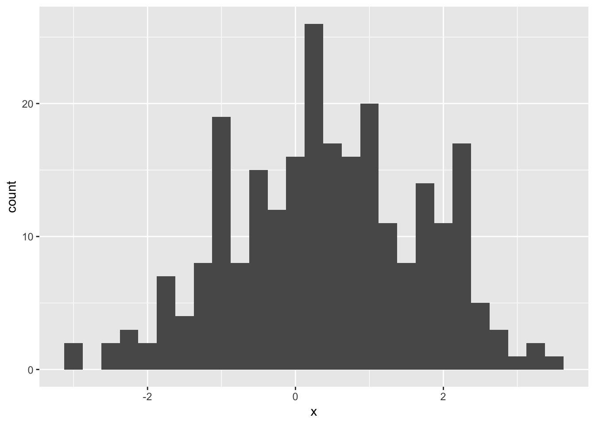

library(tidyverse)
library(here)
set.seed(36528)(Moved from last Thursday’s lecture)
Usually described as a root finding method, e.g. find \(x\) such that \(f(x) = 0\).
Can transform to a minimization method by applying to the derivative \(f'()\), and checking point is a minimum.
As a root finding method
Assume we have \(x_0\) a value that is close to the root.
Apply Taylor expansion to approximate \(f()\): \[ f(x) \approx f(x_0) + (x - x_0)f'(x_0) \]
Use this approximation to find an approximate root: \[ f(x_0) + (x - x_0)f'(x_0) = 0 \\ \implies x = x_0 - \frac{f(x_0)}{f'(x_0)} \]
Charlotte to draw picture here
Root finding algorithm
Start with a value near the root, \(x_0\)
Generate better values iteratively \(x_{i + 1} = x_{i} - \frac{f(x_i)}{f'(x_i)}\)
Stop when \(x_{i + 1}\) isn’t very different from \(x_i\)
Minimization algorithm
Start with a value near the minimum, \(x_0\)
Generate better values iteratively \(x_{i + 1} = x_{i} - \frac{f'(x_i)}{f''(x_i)}\)
Stop when \(x_{i + 1}\) isn’t very different from \(x_i\), or \(f'(x_i)\) is below some small number, or if \(i\) reaches some maximum number of iterations (failure to converge).
Start with a guess \(\mathbf{x}_0\) (a \(p \times 1\) vector), then iteratively update: \[ \mathbf{x}_{i + 1} = \mathbf{x}_{i} - \mathbf{H}(\mathbf{x_i})^{-1}\nabla f(\mathbf{x}_{i}) \]
Where \(\nabla f()_{p \times 1}\) is the gradient vector and \(H()_{p \times p}\) is the Hessian matrix.
In GLM, if you replace Hessian with expected value of Hessian you get something called Fisher Scoring, also know as iteratively weighted least squares.
Consider the following sample, \(n = 250\)
ggplot(mapping = aes(x = x)) +
geom_histogram(binwidth = 0.25)
One model might be a two component Normal mixture: arises when with probability \(\pi\) we get a value from N\((\mu_1, \sigma_1^2)\), and otherwise a sample from N\((\mu_2, \sigma_2^2)\).
\[ f(x; \pi, \mu_1, \mu_2, \sigma_1, \sigma_2) = \pi\phi(x; \mu_1, \sigma_1^2) + (1- \pi)\phi(x; \mu_2, \sigma_2^2) \] where \(\phi(x; \mu, \simga^2)\) is the density function for a Normal(\(\mu, \sigma^2)\).
Let \(\theta = (\pi, \mu_1, \mu_2, \sigma_1, \sigma_2)\).
Fill in the body of the function to calculate the density function for a specified theta and data vector x:
dmix <- function(x, theta){
} Then try some more reasonable parameters to compare to the data:
ggplot(mapping = aes(x = x)) +
geom_histogram(aes(y = stat(density)), binwidth = 0.25) +
stat_function(fun = dmix, args = list(theta = c(0.5, -2, 2, 1, 1)))Need negative log likelihood:
nllhood_mix <- function(theta, x){
-1 * sum(log(dmix(x, theta)))
}optim() with method = "BFGS", does a Quasi Newton method (swaps Hessian with an approximation).
Your Turn Provide starting values to the par argument:
(mle1 <- optim(par = c(), fn = nllhood_mix, x = x, method = "BFGS"))dmix <- function(x, theta){
pi <- theta[1]
mu <- theta[2:3]
sigma <- theta[4:5]
pi * dnorm(x, mean = mu[1], sd = sigma[1]) +
(1 - pi) * dnorm(x, mean = mu[2], sd = sigma[2])
}
optim(par = c(0.01, 1, 1, 4, 4), fn = nllhood_mix, x = x, method = "BFGS")## $par
## [1] -5403.857499 -46.858043 0.452832 897.067384 1.247876
##
## $value
## [1] -1728.785
##
## $counts
## function gradient
## 179 100
##
## $convergence
## [1] 1
##
## $message
## NULLTalk about adding some bounds in function
(mle <- optim(par = c(0.6, -0.2, 2, 2, 1), fn = nllhood_mix, x = x, method = "BFGS"))## $par
## [1] 0.9362459 0.3054026 2.2488329 1.2412641 0.1166276
##
## $value
## [1] 411.6919
##
## $counts
## function gradient
## 71 19
##
## $convergence
## [1] 0
##
## $message
## NULLWe didn’t supply the gradient – optim() will numerically approximate it with a finite difference.
Practical issues with general optimzation often have less to do with the optimizer than with how carefully the problem is set up.
In general it is worth supplying a function to calculate derivatives if you can, although it may be quicker in a one-off problem to let the software calculate numerical derivatives.
– Ripley, B. D. “Modern applied statistics with S.” Statistics and Computing, fourth ed. Springer, New York (2002).
You can do it “by hand”, or for some simple functions get R to do it, see ?deriv.
It is worth ensuring the problem is reasonably well scaled, so a unit step in any parameter can have a comparable cahange in size to the objective, preferably about a unit change at the optimium.
– Ripley, B. D. “Modern applied statistics with S.” Statistics and Computing, fourth ed. Springer, New York (2002).
Your Turn
Using nllhood() experiment with some values of theta, how much does the likelihood change for a unit change in pi? Compare it to a unit change in mu_1.
nllhood_mix(theta = c(), x = x)(It will depend on the values of the other parameters, so try some near the values you would guess from the plot)
You can specify a scaling vector with control = list(parscale = c()), “Optimization is performed on par/parscale”:
optim(par = c(0.6, -0.2, 2, 2, 1), fn = nllhood_mix, x = x, method = "BFGS",
control = list(parscale = c(10, 1, 1, 1, 1)))## $par
## [1] 0.9360004 0.3058005 2.2484975 1.2414764 0.1167027
##
## $value
## [1] 411.692
##
## $counts
## function gradient
## 92 23
##
## $convergence
## [1] 0
##
## $message
## NULLIf \(\hat{\theta}\) is the MLE for \(\theta\), then for large \(n\), \[ \hat{\theta} \dot{\sim} N(\theta, I(\hat{\theta})^{-1}) \]
where \(I(\hat{\theta})\) is the observed Fisher Information matrix, the negative Hessian of the likelihood evaluated at the MLE.
Or, in other words, the standard errors for the estimates are the square root of the diagonal of the inverse observed Fisher Information.
Since we minimized the negative log likelihood, the Hessian returned by optim() is the observed Fisher information matrix.
(mle <- optim(par = c(0.6, -0.2, 2, 2, 1), fn = nllhood_mix, x = x, method = "BFGS",
hessian = TRUE))## $par
## [1] 0.9362459 0.3054026 2.2488329 1.2412641 0.1166276
##
## $value
## [1] 411.6919
##
## $counts
## function gradient
## 71 19
##
## $convergence
## [1] 0
##
## $message
## NULL
##
## $hessian
## [,1] [,2] [,3] [,4] [,5]
## [1,] 2410.73545 -133.168404 -82.539755 -123.036544 532.91237
## [2,] -133.16840 141.886434 0.305168 -9.383503 39.56664
## [3,] -82.53976 0.305168 433.310427 14.567811 63.21927
## [4,] -123.03654 -9.383503 14.567811 294.759788 37.31136
## [5,] 532.91237 39.566643 63.219273 37.311359 367.84043mle$hessian %>% solve() %>% diag() %>% sqrt()## [1] 0.02926314 0.09565745 0.05022398 0.06190159 0.07436482data.frame(
est = mle$par,
se = mle$hessian %>% solve() %>% diag() %>% sqrt()
)Use method = "L-BFGS-B" and specify lower and upper.
optim() with default method.
No need for derivatives.
Idea: Evaluate function at a special arrangement of points (a simplex), then consider possible changes to the arrangement:
Nice animation: https://www.benfrederickson.com/numerical-optimization/